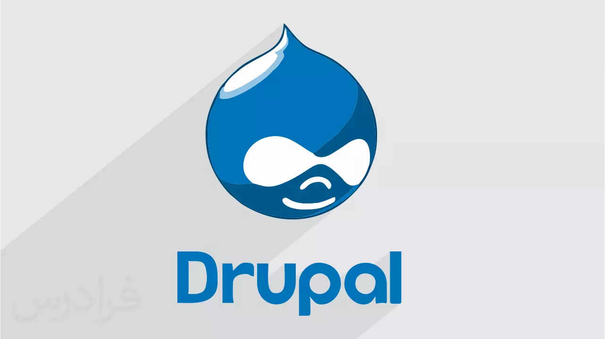

WordPress(also known as WP or WordPress.org)is a
web content management system.
It was originally created as a tool to
publish blogs but has evolved to
support publishing other web content,
including more traditional websites...
Joomla CMS
Joomla! is the only major CMS that is built entirely
by volunteers from all over the world. We have a strong
community bond and all take pleasure in building something
that has a large global impact. If you are interested in
volunteering please head over to the volunteer portal...

Drupal CMS
DrupalCon Pittsburgh 2023 has come to an end, and we cannot thank you enough
for attending! It was so great to get back together with the Drupal community
and connect through sessions, networking, trainings, and more. Did you take some amazing ...